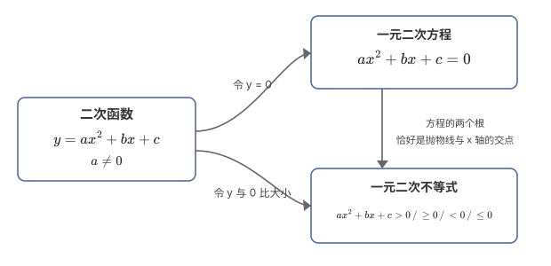
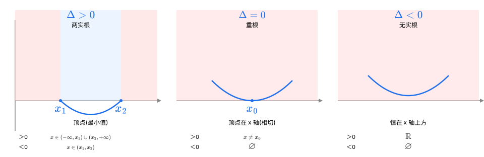
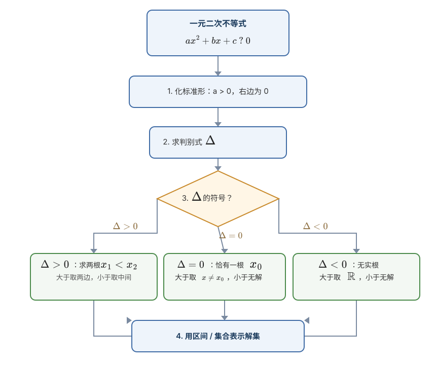
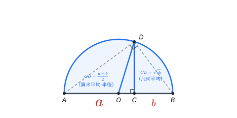
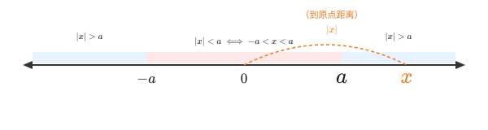
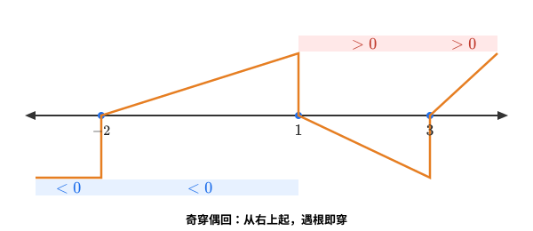

小学和初中，我们花了大量时间研究等式和方程，它们的核心是"等于"。但真实世界里，数量之间并不总是"恰好相等"，更多时候是"谁比谁多、谁比谁少"——这就是不等式。
| 语言描述 | 数学表达 |
|---|---|
| $a$ 大于 $b$ | $a > b$ |
| $a$ 大于或等于 $b$ | $a \geq b$ |
| $a$ 小于 $b$ | $a < b$ |
| $a$ 小于或等于 $b$ | $a \leq b$ |
| $a$ 不等于 $b$ | $a \neq b$ |
关键理解：方程求的是"某一个确定的值"，而不等式求的往往是"一整个范围"。例如：
不等式不是孤立的章节，它是贯穿三年的一条"暗线"：定义域、值域、最值、恒成立、参数范围……几乎处处都要用到。先看一张全景地图：
mindmap
root((不等式))
不等式性质
传递性 / 可加性
可乘性（注意符号）
同向相加 / 相乘
三个二次
二次函数
一元二次方程
一元二次不等式
基本不等式
a²+b² ≥ 2ab
均值不等式
求最值
拓展专题
绝对值不等式
分式不等式
高次不等式（穿针引线）
柯西不等式设 $a, b, c, d$ 为实数：
$$1.\ \text{对称性：} a > b \Longleftrightarrow b < a$$
$$2.\ \text{传递性：} a > b,\ b > c \Rightarrow a > c$$
$$3.\ \text{可加性：} a > b \Rightarrow a + c > b + c$$
$$4.\ \text{可乘性：} a > b,\ c > 0 \Rightarrow ac > bc;\quad a > b,\ c < 0 \Rightarrow ac < bc$$
$$5.\ \text{同向相加：} a > b,\ c > d \Rightarrow a + c > b + d$$
$$6.\ \text{同向相乘：} a > b > 0,\ c > d > 0 \Rightarrow ac > bd$$
$$7.\ \text{乘方：} a > b > 0,\ n \in \mathbb{N}^* \Rightarrow a^n > b^n$$
$$8.\ \text{开方：} a > b > 0,\ n \in \mathbb{N}^* \Rightarrow \sqrt[n]{a} > \sqrt[n]{b}$$
判断 $A$ 与 $B$ 的大小，核心思路是看 $A - B$ 的符号：
$$\begin{cases}A - B > 0 \Rightarrow A > B \\A - B = 0 \Rightarrow A = B \\A - B < 0 \Rightarrow A < B\end{cases}$$
例题1：比较 $(a + 3)(a - 5)$ 与 $(a + 2)(a - 4)$ 的大小。
解：作差
$$(a+3)(a-5) - (a+2)(a-4) = (a^2 - 2a - 15) - (a^2 - 2a - 8) = -7 < 0$$
所以 $(a+3)(a-5) < (a+2)(a-4)$。
小结：任何不等式证明，理论上都可以化为"作差——判断符号"，这是最本质的方法。
这是高一上学期第一个真正的重点，也是高考的常考点。它的秘诀只有一句话：把不等式"翻译"成函数图像来看。
所谓"三个二次"，指二次函数、一元二次方程、一元二次不等式，它们本质上是同一件事的三个侧面：

以 $a > 0$（开口向上）为例，设方程 $ax^2 + bx + c = 0$ 的判别式 $\Delta = b^2 - 4ac$：
| 判别式 | 图像位置 | $ax^2+bx+c>0$ 的解 | $ax^2+bx+c<0$ 的解 |
|---|---|---|---|
| $\Delta > 0$，两根 $x_1 < x_2$ | 与 $x$ 轴交于两点 | $x < x_1$ 或 $x > x_2$ | $x_1 < x < x_2$ |
| $\Delta = 0$，一根 $x_0$ | 与 $x$ 轴相切 | $x \neq x_0$ | 无解（$\emptyset$） |
| $\Delta < 0$，无实根 | 完全在 $x$ 轴上方 | 全体实数 $\mathbb{R}$ | 无解（$\emptyset$） |
一句话口诀（前提 $a>0$）：
"大于取两边，小于取中间。"
这里的"两边/中间"都是相对方程的两个根而言。
数形结合：下面三幅图把上面的判别式表"翻译"成抛物线，一眼看清"大于取两边、小于取中间"（前提 $a>0$，开口向上）。

解题标准流程：

例题2：解不等式 $x^2 - 3x - 4 > 0$。
解：
$$x^2 - 3x - 4 = (x - 4)(x + 1)$$
两根为 $x_1 = -1,\ x_2 = 4$，$a = 1 > 0$，开口向上，大于取两边：
$$x < -1 \ \text{或}\ x > 4$$
解集为 $(-\infty, -1) \cup (4, +\infty)$。
例题3：解不等式 $-2x^2 + 3x + 2 \leq 0$。
解：先把 $a$ 化正——两边同乘 $-1$ （注意变号！）：
$$2x^2 - 3x - 2 \geq 0$$
因式分解：$(2x + 1)(x - 2) \geq 0$，两根为 $x_1 = -\dfrac12,\ x_2 = 2$，取两边：
$$x \leq -\frac12 \ \text{或}\ x \geq 2$$
解集为 $\left(-\infty, -\dfrac12\right] \cup [2, +\infty)$。
这类题是"三个二次"的高级玩法，方法固定：
例题4：若不等式 $x^2 - 2x + k > 0$ 对任意 $x \in \mathbb{R}$ 恒成立，求 $k$ 的取值范围。
解：$a = 1 > 0$，只需 $\Delta < 0$：
$$\Delta = (-2)^2 - 4 \cdot 1 \cdot k = 4 - 4k < 0 \Rightarrow k > 1$$
所以 $k \in (1, +\infty)$。
易错提醒：当二次项系数含参数（如 $mx^2+2x+1>0$）时，要分类讨论 $m = 0$（退化为一次）与 $m \neq 0$ 两种情况，不能漏。
因为任何实数的平方都 $\geq 0$：
$$(a - b)^2 \geq 0 \Rightarrow a^2 - 2ab + b^2 \geq 0 \Rightarrow \boxed{a^2 + b^2 \geq 2ab}\ (a, b \in \mathbb{R})$$
当且仅当 $a = b$ 时等号成立。这是一切的起点。
若 $a, b > 0$，在上式中把 $a, b$ 换成 $\sqrt{a}, \sqrt{b}$，就得到：
$$\boxed{\frac{a + b}{2} \geq \sqrt{ab}}\quad (a, b > 0)$$
读作：两个正数的算术平均数不小于它们的几何平均数。 当且仅当 $a = b$ 时等号成立。
常用等价变形（务必熟练）：
$$a + b \geq 2\sqrt{ab},\qquad ab \leq \left(\frac{a+b}{2}\right)^2,\qquad ab \leq \frac{a^2+b^2}{2}$$
在一条线段 $AB = a + b$ 上取分点 $C$，使 $AC = a,\ CB = b$；再以 $AB$ 为直径作半圆，圆心记为 $O$（即 $AB$ 的中点），过 $C$ 作 $AB$ 的垂线，交半圆于 $D$：

为什么 $CD$ 正好等于 $\sqrt{ab}$？ 由圆周角定理，直径所对的圆周角 $\angle ADB = 90°$，所以 $\triangle ADB$ 是直角三角形，$CD$ 正是它斜边 $AB$ 上的高。由射影定理：
$$CD^2 = AC \cdot CB = a \cdot b \quad\Longrightarrow\quad CD = \sqrt{ab}$$
再看直角三角形 $OCD$：$OD$ 是半径（斜边），$CD$ 是一条直角边。斜边不小于直角边，于是：
$$OD \geq CD \quad\Longrightarrow\quad \frac{a+b}{2} \geq \sqrt{ab}$$
"一样长"（等号成立）当且仅当 $C$ 与 $O$ 重合，也就是 $a = b$ 时发生。
用基本不等式求最值，必须同时满足三个条件，缺一不可：
例题5（积定和最小）：已知 $x > 0$，求 $x + \dfrac{1}{x}$ 的最小值。
解：
$$x + \frac{1}{x} \geq 2\sqrt{x \cdot \frac{1}{x}} = 2$$
当且仅当 $x = \dfrac1x$，即 $x = 1$ 时等号成立，最小值为 $2$。
例题6（和定积最大）：已知 $0 < x < 1$，求 $x(1-x)$ 的最大值。
解：$x > 0,\ 1 - x > 0$，且 $x + (1-x) = 1$ 为定值：
$$x(1-x) \leq \left(\frac{x + (1-x)}{2}\right)^2 = \left(\frac12\right)^2 = \frac14$$
当且仅当 $x = 1 - x$，即 $x = \dfrac12$ 时等号成立，最大值为 $\dfrac14$。
当条件是"和等于定值"（如 $x + y = 1$）、目标是"分式之和"时，把目标式乘上一个"1"，巧妙搭桥。
例题7：已知 $x, y > 0$，$x + y = 1$，求 $\dfrac{1}{x} + \dfrac{4}{y}$ 的最小值。
解：
$$\frac1x + \frac4y = \left(\frac1x + \frac4y\right)(x + y) = 1 + \frac{y}{x} + \frac{4x}{y} + 4 = 5 + \frac{y}{x} + \frac{4x}{y}$$
由基本不等式：
$$\frac{y}{x} + \frac{4x}{y} \geq 2\sqrt{\frac{y}{x}\cdot\frac{4x}{y}} = 4$$
所以原式 $\geq 5 + 4 = 9$。当且仅当 $\dfrac{y}{x} = \dfrac{4x}{y}$（即 $y = 2x$）且 $x + y = 1$，解得 $x = \dfrac13,\ y = \dfrac23$ 时取到最小值 $9$。
目标式不是现成的"和为定/积为定"时，先配凑。
例题8：已知 $x > 1$，求 $y = x + \dfrac{1}{x - 1}$ 的最小值。
解：凑出"积为定值"的结构：
$$y = (x - 1) + \frac{1}{x - 1} + 1 \geq 2\sqrt{(x-1)\cdot\frac{1}{x-1}} + 1 = 3$$
当且仅当 $x - 1 = \dfrac{1}{x-1}$，即 $x = 2$ 时等号成立，最小值为 $3$。
绝对值表示"到原点的距离"，所以：
$$
| x | < a \Longleftrightarrow -a < x < a\quad(a>0);\qquad | x | > a \Longleftrightarrow x < -a\ \text{或}\ x > a |
|---|
$$
数形结合：$|x|$ 就是数轴上点 $x$ 到原点的距离——

三角不等式（重要性质）：
$$
| a | - | b | \leq | a \pm b | \leq | a | + | b |
|---|
$$
例题9：解不等式 $|2x - 1| \leq 3$。
解：
$$-3 \leq 2x - 1 \leq 3 \Rightarrow -2 \leq 2x \leq 4 \Rightarrow -1 \leq x \leq 2$$
解集为 $[-1, 2]$。
例题10：解不等式 $|x - 1| + |x + 3| \geq 4$。
解：用"零点分段法"。两个零点为 $x = -3$ 和 $x = 1$：
综上，解集为 $\mathbb{R}$。
核心思想：化分式为整式。注意分母不能为 0。
$$\frac{x-a}{x-b} > 0 \Longleftrightarrow (x-a)(x-b) > 0\ \text{且}\ x \neq b$$
例题11：解不等式 $\dfrac{x-2}{x+1} \leq 0$。
解：等价于
$$\begin{cases}(x-2)(x+1) \leq 0 \\x + 1 \neq 0\end{cases}\Rightarrow -1 < x \leq 2$$
解集为 $(-1, 2]$。
对 $(x-x_1)(x-x_2)\cdots(x-x_n) > 0$ 这类高次不等式，用数轴标根、奇穿偶回：
数形结合：以 $(x-1)(x+2)(x-3)>0$ 为例，把"奇穿偶回"画成图——

例题12：解不等式 $(x-1)(x+2)(x-3) > 0$。
解：三个根 $-2,\ 1,\ 3$，自右上向左依次穿过，$>0$ 取数轴上方：
$$x \in (-2, 1) \cup (3, +\infty)$$
二维形式：
$$(a^2 + b^2)(c^2 + d^2) \geq (ac + bd)^2$$
当且仅当 $\dfrac{a}{c} = \dfrac{b}{d}$ 时等号成立。它在"知条件求分式最值"时威力巨大。
衔接提示：本专题另有专门的《柯西不等式求最值——通用解题方法》笔记，里面整理了直接配凑法、权方和、待定系数法等四大套路，学完本章后可配套阅读。
不等式是"数形结合"最经典的舞台：一元二次不等式翻译成抛物线，均值不等式翻译成半圆，绝对值不等式翻译成数轴距离。看到代数式，先在脑中画出它的"几何画像"。
高中数学的解题主线就是"转化"：
解题的本质，是把没见过的题，变成见过的题。
当参数不确定（如二次项系数、判别式符号、绝对值区间）时，必须分类讨论。核心纪律是："不重不漏"，每一类的结论最后要合并。
一元二次不等式为什么能用图像解？因为它本质上是研究"二次函数值与 0 的大小关系"。不等式的问题，常常可以挂靠到函数图像上解决。
题目：解关于 $x$ 的不等式 $x^2 - (a+1)x + a \leq 0$。
解：因式分解：
$$x^2 - (a+1)x + a = (x-1)(x-a) \leq 0$$
要"取中间"，需确定两根 $1$ 与 $a$ 的大小：
题目：已知 $x > 0,\ y > 0$，且 $2x + y = 2$，求 $\dfrac{1}{x} + \dfrac{1}{y}$ 的最小值。
解：
$$\frac1x + \frac1y = \left(\frac1x + \frac1y\right)\cdot\frac{2x+y}{2} = \frac12\left(3 + \frac{y}{x} + \frac{2x}{y}\right)$$
由基本不等式 $\dfrac{y}{x} + \dfrac{2x}{y} \geq 2\sqrt{2}$：
$$\frac1x + \frac1y \geq \frac12(3 + 2\sqrt2)$$
当且仅当 $\dfrac{y}{x} = \dfrac{2x}{y}$ 即 $y = \sqrt2 x$，结合 $2x + y = 2$ 时取等号。最小值为 $\dfrac{3 + 2\sqrt2}{2}$。
题目：若 $x \in [0, 1]$ 时，$x^2 + ax + 1 \geq 0$ 恒成立，求 $a$ 的取值范围。
解：分离参数（$x \neq 0$ 时）：
$$a \geq -\left(x + \frac1x\right)$$
由基本不等式，$x + \dfrac1x \geq 2$（当 $x=1$ 取等），所以 $-(x+\dfrac1x) \leq -2$。要 $a \geq -(x+\dfrac1x)$ 对一切 $x \in (0,1]$ 恒成立，只需 $a \geq \left[-(x+\dfrac1x)\right]_{\max} = -2$；再检查 $x=0$ 时原式 $1 \geq 0$ 恒成立。故 $a \geq -2$。
| 维度 | 说明 |
|---|---|
| 分值占比 | 主要以"融合题"出现，直接或间接涉及约 15-20 分 |
| 难度级别 | 基础题到压轴题都有，是"得分基本盘 + 拉分点"兼具的章节 |
| 考查形式 | 选择题、填空题（解不等式、求最值）、解答题（恒成立、参数范围） |
核心结论：不等式几乎不单独出大题，却"埋伏"在函数、数列、解析几何、导数压轴题里。它是决定你是否能稳定中档、冲击压轴的地基。
高频综合题型：
| 阶段 | 时间 | 任务 |
|---|---|---|
| 第 1 天 | 60 分钟 | 通读本章，重点吃透"三个二次"与图像法 |
| 第 2 天 | 60 分钟 | 主攻基本不等式与"一正二定三相等" |
| 第 3 天 | 45 分钟 | 完成基础题 + 提高题，对照答案订正 |
| 第 4 天 | 30 分钟 | 错题复盘，整理易错点（乘负变号、等号取等条件） |
| 后续 | 每天 10 分钟 | 限时做 3-5 道不等式题保持手感 |
完成本章后，建议按序推进：
tags: #高考 #数学 #不等式 #学习材料